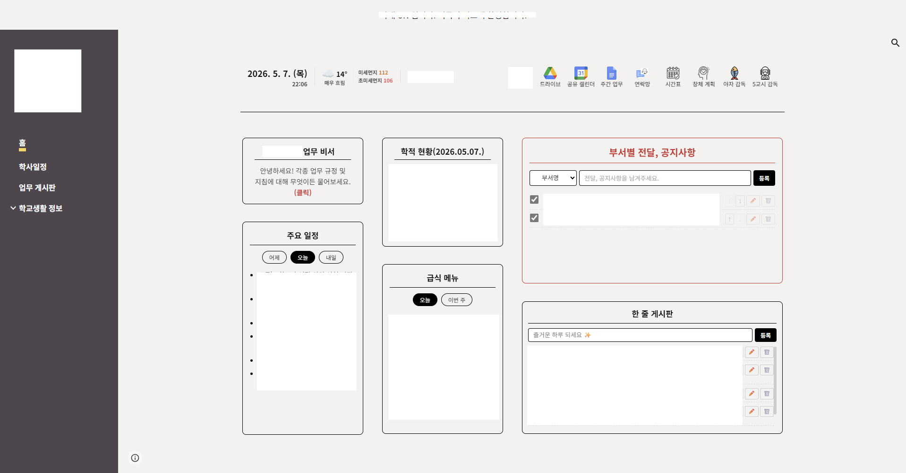

학교에는 규정집이 참 많습니다. 학업성적관리규정, 인사실무편람, 생기부 기재요령, 학교폭력 사안처리 가이드북, 행정업무운영 편람… 책장 한 칸을 가득 채우고도 모자랍니다.
문제는 막상 필요할 때예요. 어느 페이지에 있었는지 헷갈리고, PDF를 열어 한참 스크롤하다 보면 처음에 뭘 찾으러 들어왔는지 잊어버리기도 하고, 옆자리 부장님께 묻기엔 같은 걸 두 번째 묻는 것 같아 살짝 미안하고요.
옆에서 답해주는 누군가가 한 명 있었으면.
그 생각에서 출발했습니다.
출발 — 노트북LM이라는 도구
구글의 NotebookLM은 자료를 올려두면 그 안에서만 답을 찾아주는 도구입니다. 엉뚱한 답을 지어내는 일이 적고, 출처도 또박또박 짚어줘요. 이걸 학교 규정에 붙여보면 어떨까 싶어 Gemini와 더듬더듬 묻고 답하며 구상을 시작했습니다.
처음에는 주제별로 노트북을 잘게 쪼개는 그림이었어요. 생기부 따로, 성적규정 따로, 학폭 따로… 그래야 답이 더 정확할 것 같았거든요. 그런데 막상 정리하다 보니 선생님 입장에서는 "어느 노트북에 물어봐야 하지?" 가 또 다른 장벽이 되겠더라고요.
결국 방향을 바꿔, 하나의 노트북에 28종을 모두 넣는 통합형으로 갔습니다. 링크 하나만 알면 끝나도록.
정리 — 28권을 같은 책장에
도교육청·교육지원청·우리 학교 자료를 통틀어 28종.
파일명 앞에 [나이스]·[규정]·[생기부]·[학폭] 같은 태그를 붙여서, 답할 때 출처가 흔들리지 않게 했습니다.
공유 권한은 '뷰어'로 한정했어요. 선생님들이 실수로 자료를 지우거나, 학생 이름이 들어간 민감한 파일을 무심코 올리는 일을 막기 위해서입니다. 대신 환영 문구에 — "질문 내용은 본인에게만 보입니다" 라는 안내를 넣어, 마음 편히 물어볼 수 있도록 했습니다.
연결 — 온라인 교무실 한 켠에
노트북LM 링크만 게시판에 올려두면 묻혀버릴 것 같았어요. 그래서 온라인 교무실 메인에 위젯 하나로 자리를 마련했습니다. 학적 현황, 부서별 공지사항과 나란히, 같은 높이로.

위젯 안 어디를 눌러도 노트북LM 채팅창으로 넘어갑니다. 들어가면 환영 인사가 먼저 뜨고, 답변이 조금 느려도 — "공식 문서를 꼼꼼히 뒤적이는 중" 이라고 안내해 둡니다. 기다리는 시간을 '느리다'가 아니라 '꼼꼼히 본다'로 받아들여 주시면 좋겠다는 마음이었어요.
아직 서툰 비서
한계도 그대로 안고 갑니다. 답변이 빠르진 않고, 좌측의 소스 창은 숨길 수 없고, 뷰어 권한으로는 슬라이드·마인드맵 같은 스튜디오 기능을 직접 쓸 수 없어요. 다만 좌측에 늘어선 28권의 목록은 — "이 비서는 우리 학교 공식 문서만 보고 답한다" 는 증거이기도 해서, 가리는 대신 그대로 두기로 했습니다.
"규정집 어디 있더라" 하고 책장을 뒤지던 시간이 조금 줄어든 것만으로도, 한 발은 내디딘 셈이라 생각합니다. 써 보면서 의견 주시면 계속 다듬어 갈 예정이에요. 추가하면 좋겠다 싶은 지침이 있다면 그것도요.
— 작업실 한 귀퉁이에서